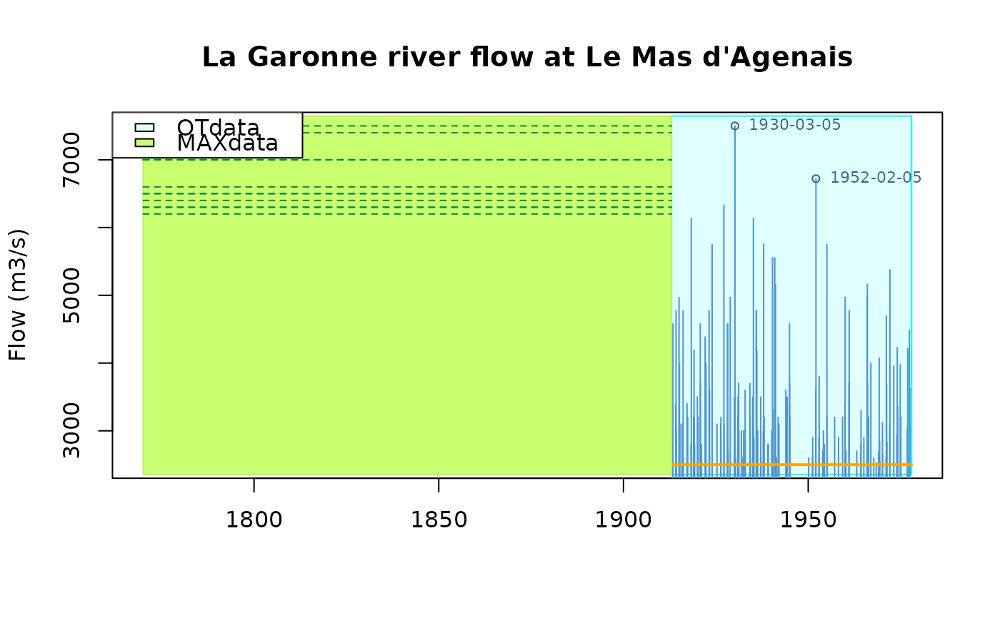

Flow of the french river La Garonne
Garonne.RdFlow of the french river La Garonne at le Mas d'Agenais
Format
The format is: List of 7
$info: List of 6$name: chr"Garonne"$shortLab: chr"La Garonne at Le Mas d'Agenais"$longLab: chr"River flow of La Garonne at Le Mas d'Agenais"$varName: chr"Flow"$varShortLab: chr"Flow"$varUnit: chr"m3/s"
$describe: chr"Flow of the french river La Garonne ..."$OTinfo:List of 4$start: POSIXct[1:1], format:"1913-01-01"$end: POSIXct[1:1], format:"1978-01-01"$effduration: num65$threshold: num2500
$OTdata: 'data.frame': 151 obs. of 3 variables:$date: POSIXct[1:151], format:"1913-04-08" "1913-04-25"...$Flow: num [1:151]2600 2800 2700 4579 3400...comment: chr [1:151] "" "" "" "" ...
$OTmissing:NULL$MAXinfo:'data.frame': 1 obs. of 3 variables:$start: POSIXct[1:1], format:"1770-01-01"$end: POSIXct[1:1], format:"1913-01-01"$duration: num143
$MAXdata:'data.frame': 12 obs. of 4 variables:$block: num [1:12]1 1 1 1 1 1 1 1 1 1...date: POSIXct[1:12], format:NA NA...$Flow: num [1:12]7500 7400 7000 7000 7000 6600 6500 6500 6400 6300...$comment: chr [1:12] "1 (1875)" "2 (1770)" "3 (1783)" "4 (1855)" ...
-
attr(*, "class")= chr "Rendata"
Details
The data concern the french river La Garonne at the gauging station named Le Mas d'Agenais where many floods occurred during the past centuries.
The data consist in OT data and historical data. The variable is the river flow in cube meter per second \((\textrm{m}^3/\textrm{s})\) as estimated from the river level using a rating curve. The precision is limited and many ties are present among the flow values.
The OT data or "OTdata" contain flows values over the threshold \(u = 2500\,\mathrm{m}\) for the \(65\) years period 1913-1977. The historical data or "MAXdata" is simply the \(r=12\) largest flows for the period of \(143\) years 1770-1912. The exact dates of these events are not known with precision but the years are known and given as comments.
References
Miquel J. (1984) Guide pratique d'estimation des probabilités de crues, Eyrolles (coll. EDF DER).
Parent E. and Bernier J. (2003) Bayesian POT modeling for Historical data. Journal of Hydrology vol. 274, pp. 95-108.
Examples
plot(Garonne)
